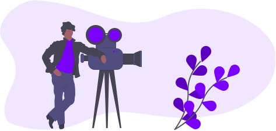
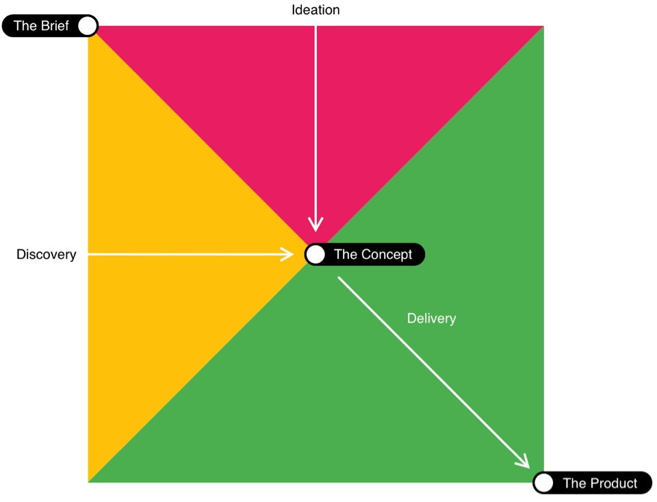
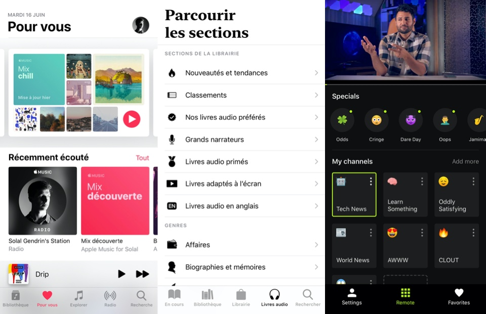
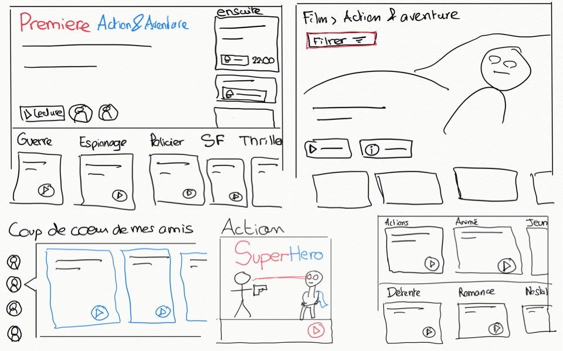
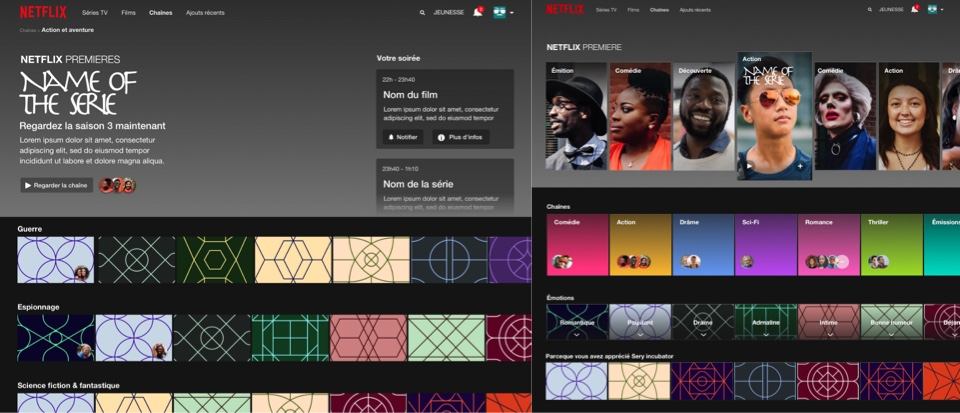
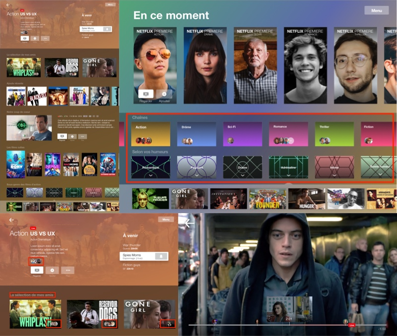

UX Design Concept
L’objectif est d’améliorer l’interface de Netflix. Au moins deux périphériques seront analysés. Afin de répondre au brief, j’ai choisi d’utiliser un modèle de processus de conception qui permette :
- D’avoir des étapes de découverte et d’idéation qui se déroulent simultanément, et non l’une après l’autre.
- De donner un rôle centrale au Design concept
- D’avoir des phases de tests à tout moment

Brief
L’objectif est d’améliorer l’interface de Netflix. Au moins deux périphériques seront analysés. Afin de répondre au brief, j’ai choisi d’utiliser un modèle de processus de conception qui permette :
- D’avoir des étapes de découverte et d’idéation qui se déroulent simultanément, et non l’une après l’autre.
- De donner un rôle centrale au Design concept
- D’avoir des phases de tests à tout moment
Article 1 - Beyond the Double Diamond: thinking about a better design process model

Auteur : Maciej Lipiec
Source : Beyond the Double Diamond: thinking about a better design process model
Article 2 - Start your designs with a concept
“Products that start with a conceptual model have bigger chances of remaining consistent as they evolve and as new features are added. Creative concepts act as a north star to align everyone in the team in regards to how the product should evolve."
Auteur : Fabricio Teixeira
Source : Start your designs with a concept
Pensée divergente
L’objectif de la phase de divergence est de conjuguer la phase de découverte et d’idéation. L’idée est d’explorer de nombreuses directions différentes (“pensée divergente”) pour finalement sélectionner l’idée la plus prometteuse.
La phase de découverte
→ Cette phase permettra d’avoir une vue d’ensemble des problèmes identifiés au travers d’une analyse à la fois des acteurs. Cette phase comporte 3 pôles d’analyse :
- Une analyse des aspirations et frustration utilisateurs au travers des tests utilisateurs
- Un “Audit Expert” avec une analyse des critères heuristiques
- Un benchmark de la concurrence (positionnement, ton éditorial…)
Tests utilisateurs
Voici un récapitulatif des points clés identifiés lors des entretiens. Le bilan est organisé en deux niveaux de lecture, une analyse synthétique interprétée suivi des données organisées par thématique.
Analyse synthétique
Le choix est rendu difficile par la quantité de contenu. Cependant les utilisateurs apprécient globalement la logique “focus on content”. Ses derniers souhaitent avoir toujours une série à regarder, que la recommandation provienne de Netflix, de son cercle social ou même par typologie de contenu. Il semble y avoir un coût à la surcharge informationnelle. Bien que les utilisateurs soient épris de liberté et d’autodétermination, ils semblent réticents à abandonner la quantité de contenu au profit de l’autodétermination ou inversement. En effet, la quantité de contenu “infini” donne l’impression à l’utilisateur qu’il existera toujours un contenu de plus grande qualité. À s’accrocher avec ténacité à tous ses choix , les utilisateurs semblent subir encore plus de frustrations, allant de l’insatisfaction au stress.
Focus sur le contenu
Le contenu est suffisamment grand pour le parcourir sans fin. Cependant, il n’est pas exhaustif.
Qualité des recommandations :
Vu la quantité de contenu présente sur la plateforme, il est primordial pour certains utilisateurs d’avoir des recommandations pertinentes pour se faire guider son choix. D’autant plus que la recherche fine n’est pas implémentée sur la plateforme. Cependant pour d’autres typologies d’utilisateurs, elles sont “inutiles”, car une fois les contenus mis en avant regardé, la qualité est dégradée. Les utilisateurs ont le sentiment de perdre la main en subissant le contenu.
Nicolas | 25 ans
“C’est pas toi qui te balade, c’est eux qui te dirigent. C’est eux qui te présentent de l’information, toi tu cherches rien.”
Céline 27 ans | coiffeuse
J’aime pas trop cliquer sur ce qu’on me propose (c’est mon côté rebelle), je regarde d’abord l’image de la série, ensuite les catégories thèmes (pour voir si ça correspond à mon mood) ensuite je regarde les recommandations, s’il y a une bande annonce je la regarde et si ça me plait j’y vais. J’aime passer du temps à chercher je préfère quand c’est moi qui choisi j’ai pas envie d’être une assisté j’ai pas envie de finir en légume incapable de réfléchir.
Qualité du contenu :
La qualité du contenu est perçu de manière complètement différente en fonction des usages. Plus les utilisateurs sont exigeant dans le choix, plus lls le seront sur le contenu.
Franck | 29 ans
Ya clairement un bon catalogue pour le prix
Abdellah | 25 à 30 ans
Le catalogue des films est nul. Ce sont des films anciens ou que j’ai déjà vu.
Focus sur le choix
Comment sont motivés les choix :
Les choix sont généralement motivés par :
- Les recommandations Netflix (note, catalogue personnalisé…)
- Recommandations sociales (Amis, famille, personnes de confiances)
- Par Type de contenu
Moins fréquent :
- Les avis d’autres utilisateurs
- Une selection plus fine dans le catalogue au travers de filtres
Comment sont motivés les choix sur les autres plateformes :
Sur les autres médias; le choix est rendu plus simple en fonction du nombre de contenu. Cependant les choix limités engendrent parfois de la frustration.
- télé : Peu de contenu, aucune personnalisation de l’experience, choix relativement court
- cinéma : Choix souvant “social”, basé sur un catalogue limité
- radio : Choix limité, badsé souvent sur la génération, la catégorie sociale
- Streaming audio : Catalogue très important, choix rendu plus simples grâce aux playlists personnalisées ou fait par d’autres membres
En cas d’indécision :
Parfois, les utilisateurs n’arrivent pas à choisir. L’indécision est également une source de frustration. Elle augmente avec le temps. Parcourir le catalogue et l’utilisateur en arrive parfois à se dire qu’avoir un film ou une serie aléatoire plus tôt aurrait été moins frustrant.
Focus sur la phase de recherche
La recherche est une source importante de frustration. Les utilisateurs ont l’impression de perdre leur temps.
Trois typologies d’utilisateurs se distinguent :
- Ceux qui se laissent porter par les recommandations communes (Top 10, sorties récentes), tandis que d’autres utilises
- Ceux qui suivent les recommandations personnelles de Netflix
- Ceux qui font une recherches spécifique, pour un film en particulier, ou qui sont prêt à rechercher longtemps sans que cela ne les frustre.
Focus sur l’aspect social
L’aspect social est très important dans le choix de la série ou du film que les utilisateurs souhaitent visionner.
Le film, c’est un moment intime, qu’on est prêt à partager parfois avec ses amis proche, sa famille, dans un couple.
Audit du parcours utilisateur
Il existe un conflit d’usage entre deux typologies d’utilisateurs sur Netflix : → Ceux qui valorise l’autodetermination, le choix du libre arbitre, au dépend de la surcharge informationelle → Ceux qui valorise les recommandations sociales, le guidage afin d’éviter la frustration lié à l’indétermination
Deux personas ont étés identifiés :
Je valorise l’autodétermination
Pierre 24 ans
Étudiant en fac de médecine Utilisateur principalement sur ordinateur Regarde principalement le soir Ne fais jamais deux choses à la fois quand il regarde netflix
Je valorise le guidage
Marie 32 ans
Business developer Utilisatrice principalement sur smartTV Regarde principalement après le repas Si la serie ne lui plait pas, elle préferera faire deux choses en même temps et laisser Netflix en fond plutôt que d’interompre
La phase d’idéation
→ L’objectif est de répondre aux problèmes préalablement identifiés via un processus créatif divergent. Cela dans le but de réaliser à terme une sélection d’idées menant à un concept. ( Source : Usabilis )
Cette phase se concentre donc sur :
- Les fonctionalitées sur les plateformes existantes proposant un service similaire (interactions, architecture de l’information…)
- Identifier en quoi ses fonctionalités pourraient répondre ou non aux insight préalablements cités
Hypothèses
- Les utilisateurs apprécient l’interface orienté contenu
- La recommandation d’un film de son cercle social à plus d’impact qu’une recommandation de netflix
- Les utilisateurs souhaitent pourvoir affiner lers choix par typologie de film sans que ça surcharge l’interface
- L’infini quantité de contenue donne l’impression à l’utilisateur qu’il existera toujours un contenu de plus grande qualité q’il pourra trouver en continuant à chercher, ce qui engendre de la frustrations, allant de l’insatisfaction au stress.
Benchmark

Constat est fait que les concurrents de Netflix ne choisiront uniquement dans les services de VOD mais dans l’ensemble des distractions “disponible à la demande”. Pour cette analyse je fais donc un focus sur :
- la surcharge informationnelle lors du choix
- le sentiment de liberté et d’autodétermination
Livre audio (Apple Books)
Surcharge informationnelle : Medium Sentiment d’autodétermination : Fort
Le livre audio semble finalement être dans la même typologie que les services de VOD.
À une différence prêt, les contenus ne sont pas personnalisés pour l’utilisateur : les sections sont génériques (“Nouveautés et tendance”, “classement”, “Nos coups de coeur”) → On doit parcourir les catégories pour trouver un contenu pertinent
Il est interessant cependant de voir que lorsque l’on parcours par catégories, il s’agit en réalité d’un mixe entre les “genres littéraires” et les “sections”, ce dernier jouant le rôle de “tête de gondole” pour pallier au manque de recommandations.
Streaming musical (Apple Music)
Surcharge informationnelle : Medium Sentiment d’autodétermination : medium
Certe le contenu est important, mais la section découverte est constitué quasiment intégralement de playlist de contenu proposé sur mesure.
Bien que ce ne soit que du contenu recommandé, on ne “subit” pas le choix car on a le choix de choisir une de nos playlist fait sur mesure en fonction de notre “humeur”
Point interessant, sur le mix “chill”, un clique sur le bouton play (en rose) joue automatiquement la playlist en mode aléatoire
C’est une alternative interessante pour orienter/restreindre le choix en fonction des humeurs sans pour autant le faire subir à l’utilisateur
Streaming vidéo (Neverthink)
Surcharge informationnelle : faible Sentiment d’autodétermination : fort
Étonnament, Neverhink à réussi à donner l’impression aux utilisateurs de choisir le contenus qu’ils regardent tout en ne proposant qu’un choix limité d’option.
Une logique interessante car au travers des thématique il donne l’illusion du choix, bien qu’il ne permet pas après coup de choisir le contenu plus en détail.
Fonctionalités implémentable
L’objectif est de répondre aux insights utilisateurs en se basant sur les hypothèses émis préalablement.

Sélection et Première
Hypothèses
L’infini quantité de contenu donne l’impression à l’utilisateur qu’il existera toujours un contenu de plus grande qualité qu’il pourra trouver en continuant à chercher, ce qui engendre de la frustrations, allant de l’insatisfaction au stress.
Préconisation
Introduire une notion de “Séléction” par genre. Au clic, voir un ensemble restreinte de vidéos associée.
Ses selections peuvent avoir deux genre de tri : par humeur ou par genre.
Se base sur le même principe que les playlists crées sur mesure par les grands acteur de la musique :
- Mix découverte, Mix chill, etc sur apple Musique
- Daily Mix sur spotify
Cela permet de forcer le choix tout en laissant l’utilisateur saisir ses affinitées. Le contenu présenté en aval se doit d’être minimal.
Cette page pourrait mener vers une page de séléction par thème ou par humeur.
Une section “Première” est introduite, cette dernière diffuserait en permanance du nouveau contenu sur des crénaux horraire spécifiques, comme à la télévision.
Une différence cependant, au clique sur le film, la série revient au début pour l’utilisateur, mais il peut voir sur sa timeline l’évolution avec le temps de sa série - même mécanique que sur molotovTV
Le choix serait ainsi motivé par plusieurs critères :
- L’aversion à la perte : le contenu pourrait être présenté sur un créneau horraire spécifique avant de le rajouter au catalogue
- Plusieurs amis pourrait être sur de regarder la série en simultané grâvce à la timeline commune à tous les utilisateurs
- On pourrait visualiser ses amis qui regardent la première
Mise en avant du contenu
Hypothèse
Les utilisateurs apprécient l’interface orienté contenu
Préconisation
Chaque tuile présente dans ce nouvel espace «de « sélection » ne doit pas simplement afficher le nom de la catégorie ou sous-catégorie mais doit proposer le contenu vidéo mis en avant
Cercle social dans netflix
Hypothèse
La recommandation d’un film de son cercle social à plus d’impact qu’une recommandation de netflix
Préconisation
Proposer de partager sa “liste” à ses amis sur les réseaux sociaux en liant son compte.
Dans la page d’acceuil, les plus récents sont affichés. Dans la page catégorie, les ajouts de ses amis par catégories sont affichés.
Hypothèse
Les utilisateurs souhaitent pourvoir affiner lers choix par typologie de film sans que ça surcharge l’interface
Préconisation
Créer deux niveau de profondeur pour les catégories. Ses sous-catégories existent déjà mais ne sont pas accessible pour l’utilisateur.
Dans chacune des pages au niveau de profondeur catégorie, proposer un filtre par sous-catégorie.
Le concept

Le temps est venu de materialiser le concept par un premier prototype basse définition ! C’est le résultat final des étapes de découverte et d’idéation. Idéal pour challanger le concept. Le concept donne la direction de la conception, mais reste très ouvert, vague et assez éloigné du produit final. Cette partie à pour but de presenter les intéractions clés avec le produit, dans l’objectif de le tester et d’ajuster pour la phase de livraison.
Design interactif
Voir le Design concept interactif 👇
Click here to view the project Design-Concept-Netflix
Composants clés
- Barre de navigation
- Ajouts de “chaîne” dans la barre de navigation
- Netflix Première
- “Première” est diffusée sur un créneau spécifique sur une chaîne donnée.
- Une “chaine” est une diffusion en continu de contenu vidéo pour un genre donné
- Page “Toutes les chaînes”
- Présente les premières (le contenu en cours de diffusion pour chaque chaîne)
- Présente les page individuelle de chaque “chaine”
- Permet de voir une selection de vidéo par émotion
- Page “chaine”
- Présente les amis regardant la chaîne actuellement
- Au clic sur “regarder la chaîne” le film revient au début
- Pouvoir visualiser le programme de la soirée
- Permet d’être notifié de la sortie d’un film
- Impossible de le regarder de suite, il commencera à un horraire donné
- Pouvoir visualiser les sous-catégories du genre donné
- Si un ami à ajouté un film à “sa liste” il affichera sa tête dessus
Protocole de test
Le parti pris à été fait de ne pas tout prototyper à cette étape : juste les interactions clés afin d’identifier si le concept répond à un besoin et est compris.
Brief d’introduction :
- Ce que l’on va faire ensemble est un test sur prototype
- tout n’est pas interactif
- Si l’utilisateur souhaite cliquer je lui indiquerai comment faire pour faire l’équivalent
- Il n’y à pas de mauvaise utilisation ou de mauvaise compréhension
Questions :
- Pas de questions hypothétiques ou fermées (ex: “que te manque-t-il sur ce site ?")
- “Explique moi ce que tu vois sur la page”
- “Selon ta compréhension, comment marche cette fonctionnalitée”
- “Dans le passé, vois-tu un moment ou tu aurrais souhaité utilisé cette fonctionnalité”
- “Si tu as envie de regarder des films d’actions, comment ferais tu ?”
Bilan :
- Le concept dans sa globalité n’est pas à remettre en question, les utilisateurs semblent l’apprécier et comprendre ses mécaniques de base.
- Cependant un travail doît être fait sur la clarté des mécanismes des fonctionalitées proposées.
Retours bruts :
- Les notions “chaînes”, “En ce moment”, “Film culte” sont parlants
- Le principe de “catégorie, sous-catégories, genre, et sous-genre” créer un mélange des notions
- le principe des “première” n’est pas compris en se basant sur l’interface. Mais le mot est compris “Film à la une de la chaine catégorie”
- La vignette de première n’est pas assez immersive
- Chaines proposés par netflix qui regroupe du contenu fait par netflix - Comprends bien le principe avant même de visualiser l’interface - Comprends bien l’aspect social des chaînes.
- Selon vos humeur est plus parlant qu’émotion → Mais un sentiment de non-autodetermination, sentiment imposé
- Design de sous-genre ressemble à humeur, cela peut créer de la confusion
Convergent thinking
Il reste encore beaucoup de travail à faire pour étoffer le concept, le rendre plus détaillé, plus spécifique et plus réalisable. Cette phase permettra de passer de “cela peut fonctionner comme ceci, ou comme ceci, ou comme cela…” à une réponse finale pour chaque question. Les tests utilisateurs dans la phase de concept permettent nottament d’orienter ses reflexions
Des deux user flows ayant étés identifiées. Nous nous concentrerons sur l’User Flow sur SmartTV. En effet, les exigeances sur cette plateforme en terme de sobriété de l’information et de navigation sont plus importante et impose de se poser dès le départ une reflexion sur la clarté des fonctionnalité proposées et sur l’architecture de l’information.
Définition des notions :
- Un genre, c’est la catégorie d’un film.
- Un sous-genre, c’est donc une catégorie de niveau 2.
- Une chaîne, Une diffusion en continu de flux vidéo et une ligne éditoriale associée.
- une première, Un contenu proposé en exclusivité en live pour la première fois sur netflix.

Vue “Toutes les chaînes”
Hypothèse : L’infini quantité de contenu donne l’impression à l’utilisateur qu’il existera toujours un contenu de plus grande qualité qu’il pourra trouver en continuant à chercher, ce qui engendre de la frustrations, allant de l’insatisfaction au stress.
Flow utilisateur : Lorsque l’utilisateur clique sur “menu” sur sa télécommande et se rend sur la section “menu” :
Modification par rapport au concept suite aux tests utilisateurs :
- Ajout d’un accès aux première en un clic afin de visualiser en un clic le contenu sur les chaines sur la section superieure. Seules les genres sont une chaînes, les humeurs se rapprochent plus de playlist avec une séléction limitée de film
Vue “chaîne”
Hypothèse : L’infini quantité de contenu donne l’impression à l’utilisateur qu’il existera toujours un contenu de plus grande qualité qu’il pourra trouver en continuant à chercher, ce qui engendre de la frustrations, allant de l’insatisfaction au stress.
Flow utilisateur : Lorsque l’utilisateur clique sur une “chaîne”
Modification par rapport au concept suite aux tests utilisateurs :
- Ajout d’un contenu éditorial entre l’affichage des premières et des sous-genre : permet d’augmenter le sentiment d’autodetermination tout en introdusant une mise en avant de section avec un nombre limité de contenu.
- Les sous-genre ne sont pas des chaînes mais des playlists qui affichent leurs films au survol
Composants sociaux
Hypothèse : La recommandation d’un film de son cercle social à plus d’impact qu’une recommandation de netflix
Flow utilisateur : Lorsque l’utilisateur parcours une “chaîne”
Modification par rapport au concept suite aux tests utilisateurs :
- Plutôt que d’afficher une selection par amis, introduire le concept via les chaînes. Ainsi le point d’entreé
- Afficher les utilisateurs qui regarde le contenu diffusé en cours
- Ajout des amis ayant donné leur consentement sur la timeline.
À savoir
1️⃣ Le social marche au travers de l’intégraion de facebook. Ainsi, pas de création de compte, d’ajout d’amis ou autre dans netflix.
2️⃣ le menu n’est pas présent dans les guidelines Apple TV mais est géré sur télécommande.
3️⃣ Meme si un compte facebook est lié, le player n’affiche pas la position de l’utilisateur dans le film. Cette fonctionnalité demande à chaque session de réactiver la fonctionnalité pour des raisons de respect de la vie privé.
4️⃣ “La séléction de vos amis” reprend les Ajouts aux titres. Pas de surcharge de l’interface ainsi.
Le produit
La conception finale prête à être testée au près d’utilisateurs afin d’en mesurer l’impact !
Annonce de la fonctionalitée
Écran d’annonce de la fonctionnalitée au lancement de l’application.
Vidéo du mockup de l’écran d’annonce
Mockup 3D
Prototype
Ne fonctionne que sur un écran d’exactement 1920px de large (résolution par défault de l’Apple TV)
Ce prototype reste à être testé dans des conditions réelles d’utilisation.